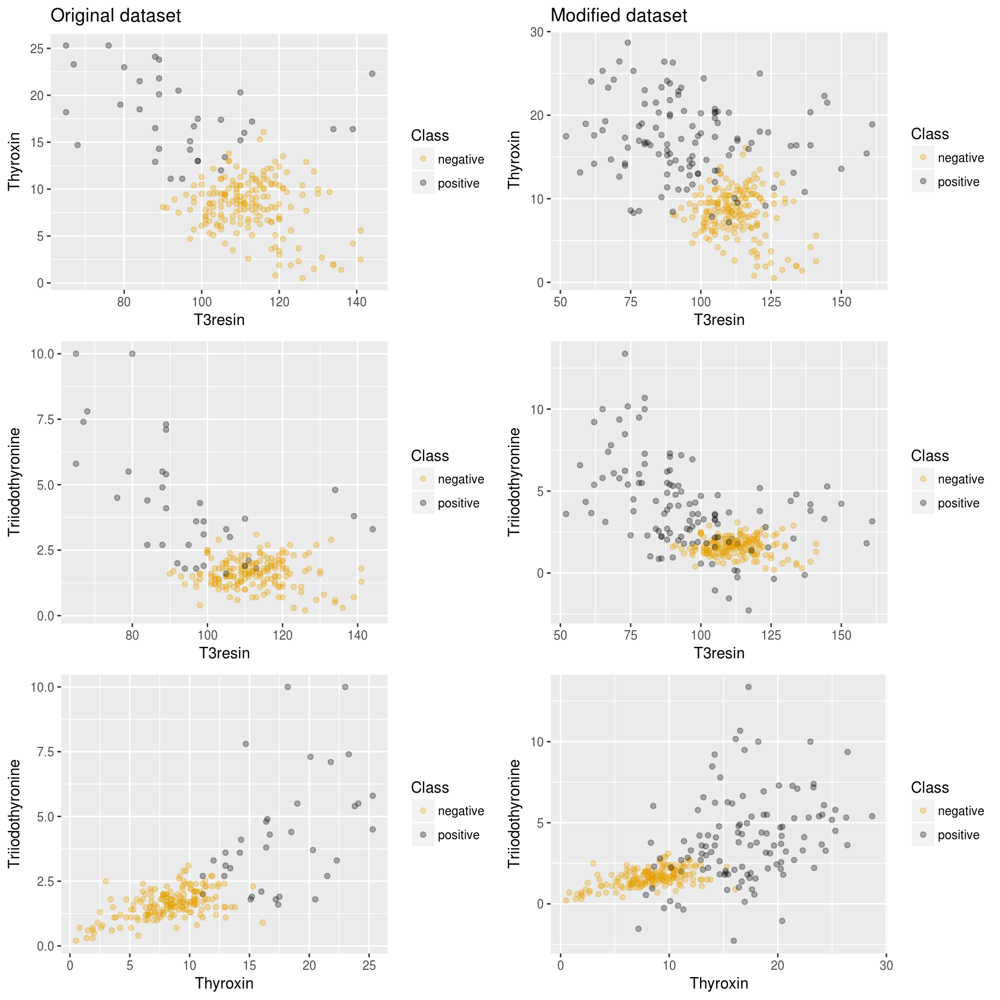
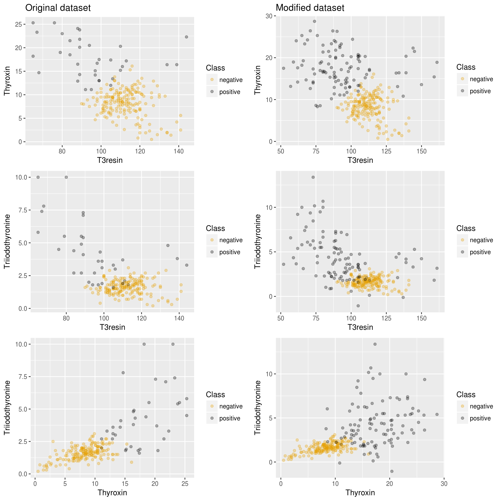

imbalance provides a set of tools to work with imbalanced datasets: novel oversampling algorithms, filtering of instances and evaluation of synthetic instances.
Installation
You can install imbalance from Github with:
# install.packages("devtools")
devtools::install_github("ncordon/imbalance")Examples
Run pdfos algorithm on newthyroid1 imbalanced dataset and plot a comparison between attributes.
library("imbalance")
data(newthyroid1)
newSamples <- pdfos(newthyroid1, numInstances = 80)
# Join new samples with old imbalanced dataset
newDataset <- rbind(newthyroid1, newSamples)
# Plot a visual comparison between both datasets
plotComparison(newthyroid1, newDataset, attrs = names(newthyroid1)[1:3], cols = 2, classAttr = "Class")
After filtering examples with neater:
filteredSamples <- neater(newthyroid1, newSamples, iterations = 500)
#> [1] "12 samples filtered by NEATER"
filteredNewDataset <- rbind(newthyroid1, filteredSamples)
plotComparison(newthyroid1, filteredNewDataset, attrs = names(newthyroid1)[1:3])
Execute method ADASYN using the wrapper provided by the package, comparing imbalance ratios of the dataset before and after oversampling:
imbalanceRatio(glass0)
#> [1] 0.4861111
newDataset <- oversample(glass0, method = "ADASYN")
imbalanceRatio(newDataset)
#> [1] 0.9722222